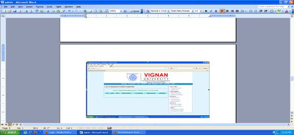
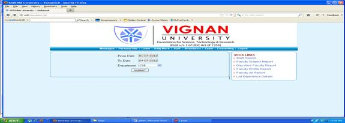
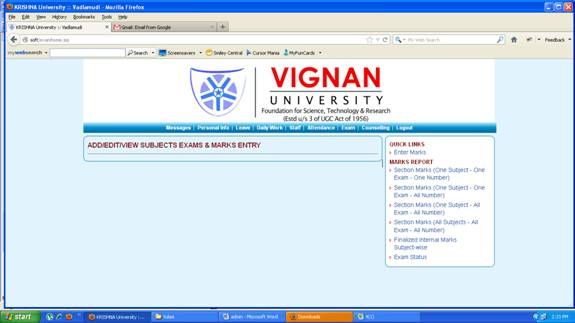

Login page:
This is the login page for
the HOD. If the HOD want to login then you must enter login-id and password correctly,
otherwise it shows that wrong email-id and wrong password. If you enter correct
login id and password then it enters into the home page

Homepage:
If entered correct user-id
and correct password then it takes in to the login page. The home page will
contain various options and the page is like this
Change password:
On the left side of the change
password page there are some links like quick links, achievements, research, project, others. In
the quick links there is a option like upload photo and page is like this
Upload photo:
In the upload photo the
faculty can upload their photo
Add achievements:
In the add achievement the
employee can add their achievements and the page appears like this
Delete achievement:
In the delete achievement
first it shows list off achievements that are added and then we can delete
particular achievement
Add research:
Here you can add your
research on the particular paper, and you have to enter authors name, name of
the paper, publication .the add research page appears like this
List of research:
In the list of research it
shows list of research papers that have been submitted, and the page appears
like this

Delete research:
In the delete research first
it shows list of researches after that then you can enter research paper that
you want to delete, page appears like this
Add Project details:
In this you have to enter
your project details like project name, abstract of the page and the page will
appear like this
Project details:
In this delete project details you can view
all the staff projects, and you can also delete particular project details and
page will appear like this
List of experience details:
In this you can see the list
of experience of the staff, and the page will appear like this
My experience details:
The details of particular
staff appears
Personal info:
In the personal information
you have to enter your personal details regarding your id, your name,
designation, qualification then it will be add in the list of employees you can
also update your details, the page will appear like this
After clicking on the submit
button, it asks do you want update your profile
The clink on ok, it will
updated then the page will be appear like this
CHANGE PASSWORD:
In the right side of the home page
you find change password it contains 3 fields old password new password and
confirm new password if u give values in that fields if u give values your
password will changed
UPLOAD PHOTO:
In this page we can upload with the
help of browse after browsing the url
appears on the text box and by submitting u can get the photo otherwise u can
rest the url by reset button

ADD ACHIEVEMENTS:
Here you can add any of your
achievements by filling the appropriate fields in the page and the page appears
as follows

LIST OF ACHIEVMENTS:
Here you can find the list of
achievements and the page appears as follows

ADD RESEARCH:
Here you can add any of the research
papers and the authors name and also date and publication media and the page
appears as follows

LIST OF RESEARCH PAPERS SUBMITTED:
Here the list of research papers
submitted appears and the page is as follows
DELETE RESEARCH:
Here you can delete your research
papers by clicking on the appropriate file name and the page is as follows

ADD PROJECT DETAILS:
Here you can add your project details
like abstract etc; and the page appears as follows
VIEW PROJECT DETAILS:
Here the project details of all the
submitted once appears and the page is as follows

LIST EXPERIENCE DETAILS:
Here the list of experience details
of staff appears and the page contains the following fields
MY EXPERIENCE DETAILS:
Here the details of the particular
staff appears and the page is as follows
LEAVE:
In this leave page there are
so many options, and page will be like this
View Leave Details:
In this it asks you for what
purpose that you want the leave and it will appear like this after clicking on
the view leave details
Check status:
It tells you the status your
leave whether you leave accepted, or in the middle, or rejected the page will
be appear like this
Leave cancel:
In the leave cancel option if
you want cancel the leave then tick the check box and submit it, then the leave
is cancelled the page will appear like this
Accept/forward leave:
In this you can accept the
leave and forward it to particular employee, the page will be appear like this
Compensatory forward:
This compensatory forward is
the type of the leave and the page will appear like this
Compensatory proposal:
In this if you want any extra
leave during working days, hen you have to enter here and the page will appear
like this
OD forward:
In this OD forward the leave
is forward to higher authorities and the page will appear like this
Cancel compensatory:
In this if you want cancel
the compensatory leaves then you can enter here, the page will appear like this
Cancel leave:
In this if you want cancel
normal leave then check the box and click on the cancel button, the page will
be appear like this
OD accept
:
In this if your OD is
accepted then it will show you in the view part, the page will appear like this
Casual leave:
If you want any casual leave then you have to enter for
what purpose, no of days you want the leave, the page will appear like this
On duty application:
In this you want apply any on
duty then you have to enter how many days, and also reason for applying on
duty, the page will appear like this
On duty leave:
In this if you want apply any
on duty leave like you want attend any conference then you have to select the
option and also mention how many days you want the leave, the page will appear
like this
Earned leave:
In this if you want apply for
any earned leave, you have to submit your medical report, the page will appear
like this
Compensatory proposal:
If you want to enter any
compensatory proposal then you have to enter purpose of the proposal, and also
mention reason for working on holiday
Compensatory leave:
In this if you want any
compensatory leave, you have to enter for what purpose you want the leave then
the page will appear like this
No of leaves accepted by the HOD:
In this it tells that no of
leaves accepted by the HOD, and the page will appear like this
No of leaves accepted by the principal:
In this it shows no leaves
accepted by the principal on particular date, the page will appear like this
No of leaves cancelled:
In this it shows no of leaves
cancelled on particular date,the
page will appear like this
No of leaves applied:
In this it shows no of leaves
applied on particular date, the page will appear like this
Marriage/medical leaves accepted:
In this it shows the accepted
medical or marriage leaves, the page will appear like this
Casual/earned leaves:
In this if you want any
casual/earned leaves then you have to enter appropriate details, the page will
appear like this
Marriage/half pay leaves accepted(pri):
In this if you want any
marriage/half pay leaves you have to enter appropriate details the page will
appear like this
Casual/ earned leaves (pri):
In this it tells no of casual
/ earned leaves accepted by the principal, the page will appear like this
After click on the submit
button then it shows like this
If you want to print you can
print it
DAILY WORK:
In daily work button there
are number of options on the left side, about the work, on clicking on the
button the page will appear like this
Add/update work:
In this if you want to update
work on particular day then you have to mention the day, the page will appear
like this
If you click on the submit
button, then it shows a page like this
If you click on the submit
button, then work details are updated successfully
Delete work:
In this if you want to delete
any details, you have to enter the date first, the page will appear like this
If you click on the submit
button then it appears like this
Consolidated report:
In
this if you want to know the subjects that you taught particular then you have
to enter date first, the page will appear like this
Click
on the submit button, the following page will appears
Click on the print button for print
My report:
In this it shows a staff report on the particular date, the
page will appear like this
If you click on the submit
button the report will be generated, then it shows the following page
Staff report:
In this you can see report of
the particular staff, the page will appear like this
On clicking on the submit
button, you can see the details of particular subject of the selected staff
If you want print you can
click on the print button
Faculty subject report:
In this you can see all the
faculty teaching subjects and labs of the particular department
On clicking on the submit
button, the page will appear like this
Day wise faculty report:
In this you can see the day
wise day wise faculty report, the page will appear
like this

Faculty profile report:
In this you can see the qualification
of the al the faculty of the selected department, he page will appear like this
On clicking on the submit
button, he page will appear like this
On clicking on the particular
link you can see the complete details of the particular faculty, he page will
appear in the following way
Faculty all report:
In this you can see the
report of all the faculty in a single page, the page will appear like this
On clicking on the submit
button the page will appear like this
List of experience details:
In this on clicking this option you can see
the experience of the particular faculty, the page will appear like this
Attendance:
In this it contains various
options regarding attendance you can see the class attendance the page will
appear like this
Mark attendance:
In this you can mark the
attendance of a particular batch, the page will appear
like this
Semester subjects:
In this you can see the
semester subjects of a particular branch, the page will appear like this
On clicking on the continue
button the page will appear like this
Student registered subjects:
In this you can see registered
subjects of the students the page will appear like this
On clicking on the continue
button, the page will appear like this
Semester offered subjects:
In this you can see the
details of the student offered subjects, the page will appear like this
On clicking on the continue
button, the page will appear like this

Student subject report:
In this you can see subject
report of the student the page will appear like this
On clicking on the continue
the page will appear like this
View class details:
In this you can see the
details of particular year students the page will appear like this

On clicking on the submit
button, the page will appear like this
Student history:
In this you can see all the
details of the particular student, the page will appear like this
On clicking on the submit
button, the page will appear like this
Individual attendance:
In this you can see the
individual attendance of a student during some particular period the page will
appear like this
On clicking submit button,
the page appears
Section attendance (consolidated):
In this you can get
attendance of the section by filling appropriate details the page appear like
this
On clicking submit button,
you can the attendance details of the specified course, branch, year, semester
the page appear like this
Section attendance (subject wise):
In this you can get section
attendance by subject wise, the page appear like this
On licking on the submit button, he page
appear like this
Absentees (subject wise):
In this you can see the
subject wise absentees by selecting the appropriate details
Absentees (section wise):
In this you can see the
section wise absentees, the page appear like this
On clicking on the submit
button, the page appear like this
List of conducted hours:
In this you can see the list
of conducted hours during some period, the page appear like this
On clicking submit button,
the page appear like this
Download student details as excel file:
In this you can see the
student details in excel file, the page appear like this
On clicking submit button,
the page appear like this
All attendance reports:
In this you can get all the
attendance report the page appear as follows
Suppose if you click on BIRTH LIST then the following page
appears
If you give any date and submit then
the list of students who celebrate birth day on that particular day appears as
follows
Suppose if you click on DAY WISE ATTENDENCE (branch wise) then
the following page appears

If you fill the details the report
appears as follows
Suppose if you click on DAY WISE ATTENDENCE (all branches) then
the following page appears

If you give any date and submit then
the attendance report of all branches appears as follows
Suppose if you click on DAY WISE ATTENDENCE (consolidated) then
the following page appears

The report of consolidated attendance
day wise until that periods appears as follows

Suppose if you click on DAY
ABSENTEES (BRANCH-WISE) then the following page appears

If you submit the details and print
then the report appears as follows
Suppose if you click on ALL
HOUR ABSENTEES (YEAR-WISE WITH SMS)then the
following page appears
The report will be generated as
follows

Suppose if you click on ALL
HOUR ABSENTEES (PERIOD-WISE WITH SMS)then the
following page appears
The report will be generated as
follows if you submit

Suppose if you click on ALL
HOUR ABSENTEES (PERIOD-WISE WITH SMS)then the
following page appears

If you submit report will be
generated as follows

Suppose if you click on STUDENT
ADDRESS PRINT ON STICKERS then the following page appears

If you submit the report will be
generated as follows
Suppose if you click on STUDENT
ADDRESS REPORT then the following page appears

The report will be generated as
follows if you submit
Suppose if you click on STUDENT ADDRESS CONFIRM then
the following page appears

The excel report will be generated as
follows
Suppose if you click on Course-wise
SMS to All Students / Parents / Both then the following page appears

EXAMS:
In
this exam link it contains various options, the page appear like this

Enter marks:
In
this you have to enter course, branch, year, semester then you can see the
marks, the page appear
Section marks (one subject-one exam-one
number):
In
this you can see the individual person marks, in the particular subject, the
page appear like this
Section marks (one subject-one
exam-all numbers)
In
this you can see all numbers marks on a particular subject, the page appear
like this
Section marks (one subject-all
exams-all numbers):
In
this you can see all the exam marks of all the numbers in a particular subject,
the page appear like this
Section marks (all subjects-all
exams-all numbers):
In
this you can see all the subject marks, the page appear like this
Finalized internal marks (subject
wise)
In
this you can see finalized internal marks off all the subjects, the page
appears like this
Exam status:
In
this you can see status of the exam by branch wise, the page appear like this

Counseling
:
In
this it contains various option regarding counseling, the page appear like this
You have to select appropriate radio button,
it asks you to proceed, the page appear like this
On
clicking the proceed button, the page appear like this
Then
select student, select semester, and click on continue the page appear like this
Overall profile:
In
this you can see profile of a selected student, the page appear like this
SEM profile:
In
this you can see the SEM profile of a particular student, the page appear like
this
Click
on the submit button, the details are updated, the page appear like this
Emotional:
In
this you can update your rating, the page appear like this

Observable:
In
this you can see the observable behavior of a student, the appear like this
External marks:
In
this you can see external marks of a student, the page appear like this
Internal marks:
In
this you can see internal marks of a
student, the page appear like this
Counseling form:
In
this you can see counseling form of a particular student, the page appear like
this
Student self assessment:
In
this you can see self assessment of a student, the page appear like this
Parent:
In
this you can see parent observation of a student, the page appear like this
Further studies:
In
this you can see the student further study details, the page appear like this
Job skills:
In
this you can see job skills of a student, the page appear like this
Events:
In
this you can see the events held on the particular date, the page appear like
this
SEM end reports:
In
this you can see SEM end report of a student, the page appear like this
Student history:
In
this you can see the student history, the page appear like this
Attendance:
In
this you can see attendance report of a student, the page appear like this

Logout:
In this
by clicking on the logout option you will come out of the page, the page appear
like this